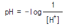

인쇄기능사 (2002-10-06 기출문제)
1과목: 임의구분
1. 인쇄기 형식에는 3가지 종류가 있다. 여기에 해당되지 않는 것은?
- 평압식
- 원압식
- 윤전식
- 무압식
(정답률: 알수없음)

2. 노랑색(Yellow) 물감과 파랑색(Cyan) 물감을 합쳤을 때 나타나는 색은?
- 흰색(White)
- 파랑색(Blue)
- 분홍색(Magenta)
- 초록색(Green)
(정답률: 알수없음)
3. 인쇄의 품질관리상 pH는 중요한데 가장 관계가 없는 것은?
- 종이와 잉크의 건조
- 오프셋인쇄의 때낌발생
- 평판인쇄의 에치액
- 잉크의 내광성
(정답률: 알수없음)
4. 다음 중 pH를 알맞게 나타낸 것은?
- pH = log[H+]
- pH = -log[H+]

- pH = log[OH-]
(정답률: 알수없음)
5. 색채의 강하고 약한 정도를 표시한 것은?
- 명도
- 휘도
- 채도
- 색상
(정답률: 알수없음)
6. 인쇄속도와 잉크 전이율의 관계를 바르게 표현한 것은?
- 인쇄속도가 계속 빨라지면 잉크 전이율도 계속 상승한다.
- 인쇄속도가 잉크 전이율에 영향을 주지 않는다.
- 인쇄속도가 빠르면 잉크 전이율은 낮아진다.
- 인쇄속도가 저하되면 잉크 전이율도 떨어진다.
(정답률: 알수없음)
7. 저항 20[Ω], 유도 리액턴스 10[Ω], 용량 리액턴스 10[Ω]으로 된 병렬회로에 전압 100[V]를 가하는 경우에 흐르는 전류[A] 및 위상각[rad]은?
- 4[A], 0[rad]
- 5[A], 0[rad]
- 4[A], π[rad]
- 5[A], π[rad]
(정답률: 알수없음)
8. 200V, 500W 전열기의 저항 크기는 얼마인가?
- 5[Ω]
- 20[Ω]
- 80[Ω]
- 100[Ω]
(정답률: 알수없음)
9. 0.5[Ω]의 콘덕턴스를 가진 저항체에 5[A]의 전류를 흘리려면 몇 [V]의 전압을 가져야 하는가?
- 2.5
- 5
- 10
- 50
(정답률: 알수없음)
10. 잉크를 가열하면 연화되고 냉각하면 굳어지는 잉크로 인쇄하는 것은?
- 카본 인쇄
- 금속 인쇄
- 전사 인쇄
- 비지니스폼 인쇄
(정답률: 알수없음)
11. 용지에 잉크 피막이 가장 두껍게 인쇄되는 방식은?
- 볼록판
- 오목판
- 평판
- 공판
(정답률: 알수없음)
12. 표면가공의 목적이라고 볼 수 없는 것은?
- 인쇄물에 광택을 낸다.
- 내약품성을 감소시킨다.
- 습기를 방지한다.
- 인쇄효과와 장식효과를 높인다.
(정답률: 알수없음)
13. 물에 반발하는 성질을 가지고 있으며 방습,방수,내유성을 필요로 하는 종이컵, 식료품의 포장가공 등에 널리 사용되는 방법은?
- 왁스코팅
- 금은가루코팅
- 폴리프로필렌 필름 래미네이션
- 비닐 필름 래미네이션
(정답률: 알수없음)
14. 한 권의 책 분량에 해당하는 쪽들을 순서대로 이어지도록 한 묶음 씩 합치는 것을 의미하는 것은?
- 장합
- 실매기
- 죄기
- 배킹
(정답률: 알수없음)
15. 인간의 눈이 색의 3속성 중에서 예민한 순서대로 나열한 것은?
- 명도-색상-채도
- 명도-채도-색상
- 채도-명도-색상
- 색상-명도-채도
(정답률: 알수없음)
16. 인쇄잉크를 만들 때 첨가제로써 컴파운드(Compound)의 종류가 아닌 것은?
- 울그리스
- 밀납
- 합성납(Synthetic wax)
- 페놀수지
(정답률: 알수없음)
17. 잉크에 체질안료를 사용하는 목적을 설명하였다. 맞는 것은?
- 색상을 낼 수 있으며 일반적으로 백색 잉크 제조시 사용된다.
- 안료의 질을 높이기 위해 사용되는 것으로 엷은 적색의 안료이다.
- 잉크의 농도를 조절하기 위해 사용되며 분말은 백색이지만 잉크를 제조하면 무색이다.
- 염료가 없을 때 대용품으로 사용되는 것으로 색상이 다양하다.
(정답률: 알수없음)
18. 인쇄에 알맞는 금속 평판 성질에 대한 설명 중 옳지 않은 것은?
- 두께가 일정해야 한다.
- 흠이 없어야 한다.
- 경도가 알맞아야 한다.
- 물러서 잘 꺽어져야 한다.
(정답률: 알수없음)
19. 다음 안료 중 백색 안료는?
- 산화티탄
- 프루시안블루
- 황연
- 카본블랙
(정답률: 알수없음)
20. 종이를 순백불투명하게 하고 지면을 평활하게 하기 위한 전충제가 아닌 것은?
- 점토
- 탄산석회
- 황화아연
- 규산
(정답률: 알수없음)
2과목: 임의구분
21. 오프셋용 종이에서만 특별히 필요한 종이의 시험법은?
- pH 시험
- 기공도 시험
- 인장강도 시험
- 평활도 시험
(정답률: 알수없음)
22. 4x6전지의 규격은?
- 650 x 900 ㎜
- 636 x 939 ㎜
- 788 x 1091 ㎜
- 630 x 1092 ㎜
(정답률: 알수없음)
23. 종이의 인쇄 적성과 관계있는 물리성이라고 볼 수 없는 것은?
- 종이의 표면강도
- 잉크의 수리성
- 종이의 투명성
- 표면의 평활성
(정답률: 알수없음)
24. 오프셋 인쇄에 사용되는 고무블랭킷(blanket)의 특성 중 옳지 않은 것은?
- 탄성이 있어야 한다.
- 내유성이라야 한다.
- 신축성이 커야 한다.
- 잉크의 전이성이 좋아야 한다.
(정답률: 알수없음)
25. 일반적으로 전지 용지의 장변과 단변의 크기 비율은?
- 2 : 1
- √2 : 1
- 1.6 : 1
- 1 : 1
(정답률: 알수없음)
26. 특히 점도가 높은 잉크를 사용시에는 어떠한 고장이 발생 되는가?
- 잉크의 착색력이 약화된다.
- 습수에 대한 내항력이 약화된다.
- 인쇄물의 얼룩이 발생한다.
- 용지의 뜯김 현상이 발생한다.
(정답률: 알수없음)
27. 알루미늄판에 대한 설명 중 옳은 것은?
- 진한 질산에는 부식이 잘 된다.
- 아연판보다 친수성이 좋다.
- 연성은 아연판보다 좋다.
- PS판용으로 사용되지 않는다.
(정답률: 알수없음)
28. 고무 블랭킷이 갖추어야 될 성질이 아닌 것은?
- 잉크의 전이성이 좋아야 한다.
- 탄력성이 있어야 한다.
- 기름에 녹지 말아야 한다.
- 종이가 잘 붙어야 한다.
(정답률: 알수없음)
29. 종이의 제조과정 중 비팅(beating)이란?
- 펄프를 물속에서 기계적으로 두둘겨서 분산시키는 작업
- 적당한 소수성을 가지도록 섬유를 아교,녹말 등의 소수성 콜로이드 물질로써 둘러 싸는 조작
- 종이를 순백,불투명하게 하고 지면을 치밀,평활하게 하는 조작
- 섬유를 얇은 층으로 여과하는 과정
(정답률: 알수없음)
30. 다음 중에서 친수성이 가장 양호한 판재는?
- 아연(Zn)
- 니켈(Ni)
- 알루미늄(Al)
- 구리(Cu)
(정답률: 알수없음)
31. B-B형 오프셋 윤전기의 특징이라고 볼 수 없는 것은?
- 기계 전체가 낮으므로 조작하기 편리하다.
- 보통 건물에 설치가 가능하다.
- 다양한 색 수의 구성이 가능하다.
- 기계가 대형이며 관리하기가 어렵다.
(정답률: 알수없음)
32. 다음 중 마찰식 급지 방법은?
- 로터리 피더
- 덱스터 피더
- 유니버설 피더
- 스트림 피더
(정답률: 알수없음)
33. 바람을 불어 종이를 분리시키는 것은?
- 콤바
- 제 1서커
- 제 2서커
- 블라스트
(정답률: 알수없음)
34. 급지부 펌프의 용량과 가장 관계가 없는 것은?
- 종이의 크기
- 종이의 두께
- 기계의 속도
- 화선 민판부의 크기
(정답률: 알수없음)
35. 자동 오프셋 인쇄기에서 스윙기구의 역할은?
- 판통과 압통간의 간격을 조절한다.
- 블랭킷통의 좌우 맞춤을 조절한다.
- 급지된 종이가 블랭킷을 통과하여 배지부로 정확하게 도착하도록 도와준다.
- 급지된 종이를 고속으로 회전하는 압통 그리퍼에 정확하게 전달한다.
(정답률: 알수없음)
36. 오프셋 인쇄기의 인쇄부 구성은?
- 판통,고무통,압통,잉크장치,습수장치로 구성된다.
- 급지장치,판통,고무통,압통,잉크장치로 구성된다.
- 판통,고무통,압통,습수장치,배지장치로 구성된다.
- 판통,압통,급지장치,배지장치로 구성된다.
(정답률: 알수없음)
37. 오프셋 윤전기의 구조 중 압통과 고무통의 겸용형은?
- 드럼형
- 5통형
- 3통형
- B-B형
(정답률: 알수없음)
38. 급유의 목적 중 접촉하는 금속 상호간의 마멸을 덜어주는 효과는?
- 감마효과
- 냉각효과
- 응력 분산효과
- 방청효과
(정답률: 알수없음)
39. 통꾸밈 점검시 블랭킷통과 압통간의 압력조절을 하는 것은?
- 터언 버클 바아(turn buckle bar)
- 클러치(clutch)
- 실린더 트러스트(cylinder thrust)
- 인터널 기어(internal gear)
(정답률: 알수없음)
40. 인쇄판을 걸기전에 검토 사항이 아닌 것은?
- 판재료의 성분 검토
- 화선의 탈락 유무
- 화선의 긁힘 유무
- 판물림 부분의 절단유무
(정답률: 알수없음)
3과목: 임의구분
41. 다음 중 인쇄압과 가장 관계가 없는 것은?
- 실린더 패킹
- 베어러
- 용지
- 그리퍼
(정답률: 알수없음)
42. 습수에 요구되는 성질이 아닌 것은?
- 판면에 잘 묻을 것
- 유화가 잘 이루어 질 것
- 잉크 전이성을 좋게 할 것
- 판상에서 너무 빨리 증발하지 않을 것
(정답률: 알수없음)
43. 오프셋 인쇄기의 3통 표면 회전속도가 불일치할 때 발생하는 현상이라고 볼 수 없는 것은?
- 판의 내쇄력이 나빠진다.
- 슬러가 생긴다.
- 인쇄물 화선의 상하길이가 변한다.
- 잉크농도가 엷어진다.
(정답률: 알수없음)
44. 화선부의 색깔이 약해지는 원인이 될 수 없는 것은?
- 잉크의 전이가 불량하다.
- 판이 마모 되어 잉크가 잘 오르지 않는다.
- 판에 물이 과도하게 많아졌다.
- 피더(feeder) 상태가 불량하다.
(정답률: 알수없음)
45. 안전 작업에 필요한 이유 중 해당되지 않는 것은?
- 생산재의 손실을 축소시킬 수 있다.
- 생산성이 감소된다.
- 인명피해를 예방할 수 있다.
- 산업설비의 손실을 감소시킬 수 있다.
(정답률: 알수없음)
46. 인쇄작업장의 바닥이 미끄러워서 보행 중 넘어져 다친 경우 사고의 형태는?
- 추락
- 충돌
- 부딪침
- 전도
(정답률: 알수없음)
47. 패킹(packing)을 할때 코르크 및 모직물을 넣는 것은?
- 하드 패킹(hard packing)
- 쎄미하드 패킹(semihard packing)
- 소프트 패킹(soft packing)
- 고무 패킹(rubber packing)
(정답률: 알수없음)
48. 오프셋 인쇄 후 다음 공정은?
- 촬영
- 교정
- 제판
- 제책
(정답률: 알수없음)
49. 인쇄준비작업에 대한 설명으로 적합하지 않은 것은?
- 인쇄전 준비로서 용지, 잉크의 준비, 가늠맞춤, 색맞춤 등의 작업을 종료하면 본인쇄 작업을 한다.
- 판의 흠이나 더러움 등의 불필요한 것은 수정석 등을 사용하여 제거한다.
- 색맞춤 용지를 인쇄하여 이것으로 잉크양이나 축임물 상태를 점검한다.
- 손지 인쇄는 반드시 교정 인쇄와 함께 인쇄한다.
(정답률: 알수없음)
50. 종이가 2-3장이 급지되면 인쇄압이 증가하여 기계에 무리한 힘이 가해진다. 급지 직전 기계가 정지하게 하는 장치는?
- 제1빨대 감지장치
- 2장 검지장치
- 프레셔 클램프 장치
- 공기분사 노즐장치
(정답률: 알수없음)
51. 파우더 살포량을 증가시키는 원인은?
- 인쇄물 광택이 적을 때
- 인쇄물이 많이 쌓일 때
- 축임물량이 부족할 때
- 건조제 양이 많을 때
(정답률: 알수없음)
52. 판을 인쇄기계에 장착할 때 잘못하여 패킹종이가 접히면 부분적으로 패킹종이가 두꺼운 부분이 생긴다. 이 부분이 인쇄에서 생기는 주된 현상은?
- 화선이 빨리 마모된다.
- 화선이 튼튼해져서 내쇄력이 높아진다.
- 블랭킷에는 손상을 입히지 않는다.
- 전체적으로 화선이 진하게 인쇄된다.
(정답률: 알수없음)
53. 델리버리 장치에서 체인 휠에 의해 용지에 생기는 오염이나 용지의 처짐 등으로 발생하는 오염 문제를 해결하기 위하여 만들어진 장치가 아닌 것은?
- sheet guide drum
- blower
- contact ring
- spray gun
(정답률: 알수없음)
54. 인쇄기계의 습수장치에서 인쇄판에 묻혀 주어야 하는 습수의 이론적인 최소량은?
- 비화선부를 습수분자로 완전히 덮을 수 있는 량
- 인쇄판에서 습수가 흘러 떨어지기 시작할 때의 량
- 습수가 인쇄판에 묻은 상태를 쉽게 눈으로 볼 수있는 량
- 잉크와 에멀션이 일어나기 직전의 량
(정답률: 알수없음)
55. 매끄러운 종이일수록 일어나기 쉬운 문제점으로 인쇄된 정방형 망점이 타원형으로 나타나는 것을 무엇이라하는가?
- 더블링
- 슬러
- 피킹
- 스트라이크스루
(정답률: 알수없음)
56. 잠금(lock) 버튼을 사용할 때는 어느 경우인가?
- 배지 체인의 집게를 조정할 때
- 급지기 기구를 조정할 때
- 앞맞추개와 옆맞추개를 조정할 때
- 잉크량을 조정할 때
(정답률: 알수없음)
57. 인쇄 공장내에서 정전기(靜電氣)발생은 어느 경우에 가장 발생하기 쉬운가?
- 인쇄 공장내의 습도가 높을수록 발생하기 쉽다.
- 인쇄 공장내에 습도가 낮을수록 발생하기 쉽다.
- 인쇄 공장내에 온도가 높을수록 발생하기 쉽다.
- 인쇄 공장내에 온도가 낮을수록 발생하기 쉽다.
(정답률: 알수없음)
58. 인쇄판을 장착하거나 블랭킷을 세척하기 위하여 인쇄기의 판통을 일정한 위치에서 정확하게 정지시키기 위해서는 어떤 스위치를 사용해야 하는가?
- 정지 스위치
- 미동 스위치
- 저속 스위치
- 고속 스위치
(정답률: 알수없음)
59. 다음 중 인쇄기계에 윤활유를 급유할 때 주의해야 할 사항을 잘못 설명한 것은?
- 급유할 윤활유의 종류를 확인한다.
- 급유 위치별 급유 빈도를 확인한다.
- 윤활유가 넘치지 않도록 주의한다.
- 급유는 될 수 있는 대로 자주 한다.
(정답률: 알수없음)
60. 배지 장치에서 인쇄가 완료된 종이를 압통의 그리퍼로부터 배지 파일까지 한번에 운반하기 위하여 널리 사용되는 그리퍼의 형태는?
- 로터리 그리퍼(rotary gripper)
- 핀서 그리퍼(pincer gripper)
- 체인 그리퍼(chain gripper)
- 스윙 그리퍼(swing gripper)
(정답률: 알수없음)